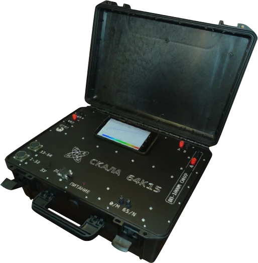
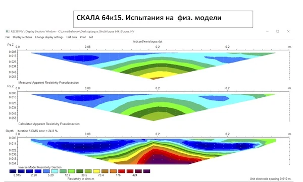
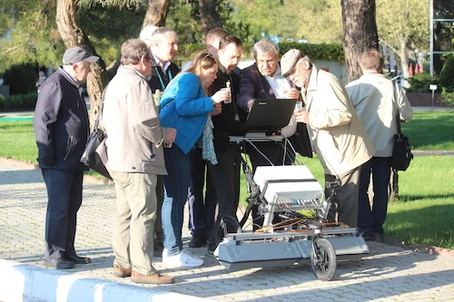
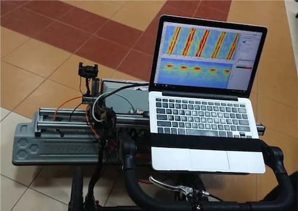

В период с 22 по 26 апреля 2019 года в Геленджике прошла 15-я юбилейная научно-практическая конференция и выставка «Инженерная и рудная геофизика 2019».

На конференции приняли участия 166 специалистов из 82-х компаний, было представлено 124 доклада в рамках 16 научных сессий. На выставке было представлено 9 стендов, среди которых производители программно-аппаратных комплексов для решения широкого круга геофизических задач, а также компании осуществляющие геофизические исследования.
Компания “КБ Электрометрии” представила 15-канальную аппаратуру 3D электротомографии Скала-64к15 на базе новой архитектуры с продвинутой системой самодиагностики, внешним управлением и с возможностью подключения внешнего источника ВП-1000М.

В рамках полевой демонстрации были представлены результаты физического моделирования с применением малогабаритной установки для оперативного тестирования аппаратуры электротомографии.


Так же было продемонстрировано сравнение производительности одноканальной и многоканальной аппаратуры электротомографии (Скала 48 и Скала 48К12). При использовании стандартного шаблона измерения (Шлюмберже) для прямолинейной расстановки из 24-х электродов – скорость измерения одноканальной аппаратурой составила около 20-ти минут, тогда как 12-ти канальная завершила работу менее чем за 2 минуты.
Кроме электротомографии и индукционного профилирования на выставке и полевой демонстрации была представлена перспективная разработка наших партнеров (НПО “Терразонд”) – аппаратура многоракурсной георадиолокации ГРТ-2Х (3D георадар), вызывающая активный интерес со стороны научного сообщества.


Подробную информацию о мероприятии можно получить на сайте организаторов.